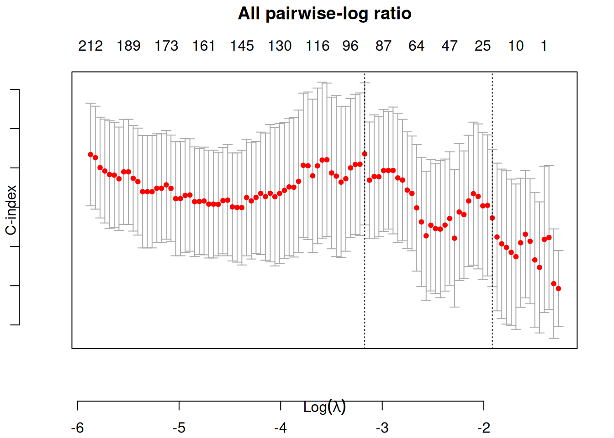
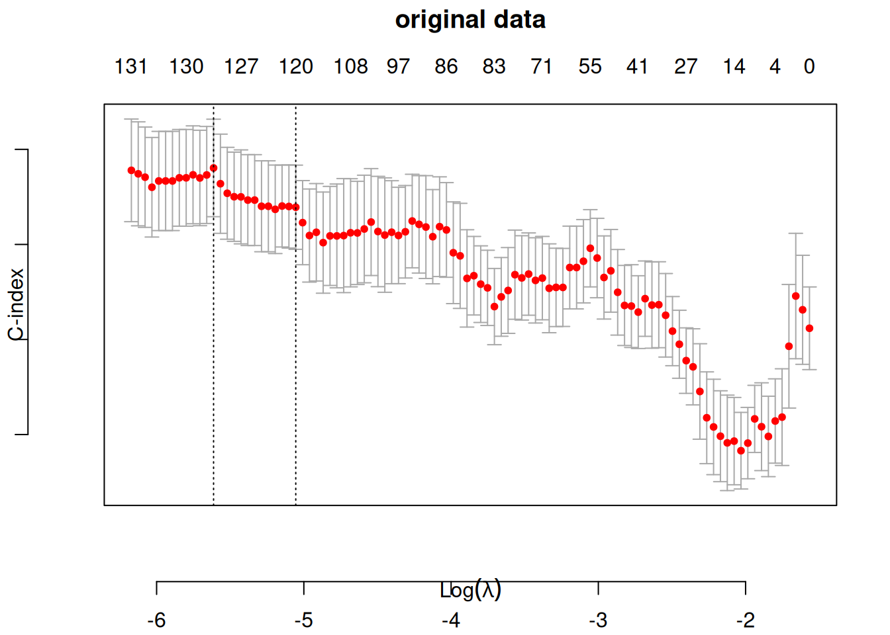
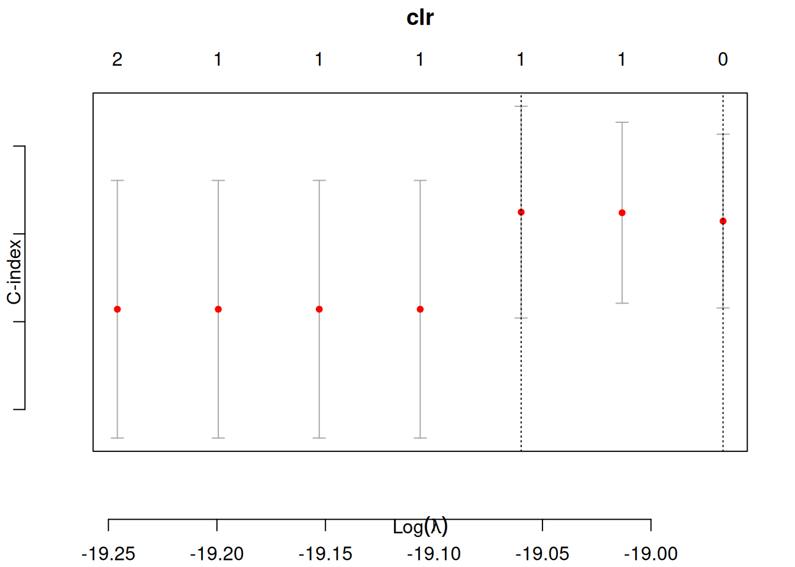
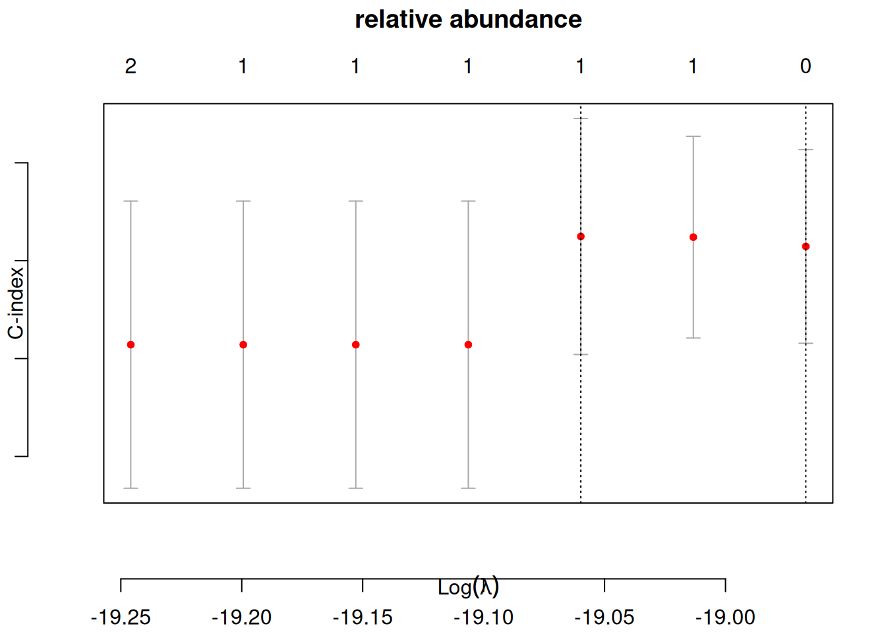
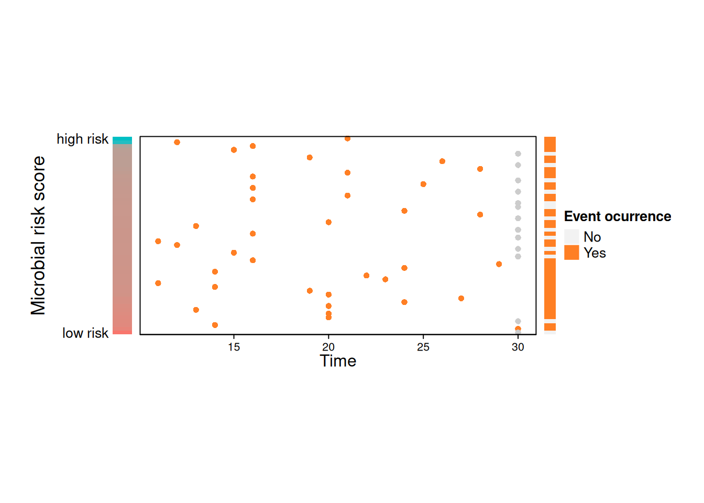
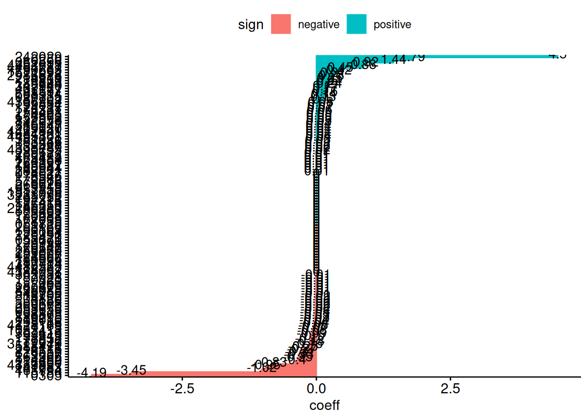

library(mia)
library(ggplot2)
library(lattice)
library(TreeSummarizedExperiment)
library(coda4microbiome)
library(SummarizedExperiment)
library(tibble)
library(phyloseq)
library(survival)
library(survival)TreeSE_Coxmodel.qmd
This report focuses on evaluating the predictive performance of the Cox proportional hazards model under transformed and un-transformed data. The primary objective is to identify which transformation method allows the Cox model to yield the most accurate survival predictions. By systematically applying distinct transformations to the data-set and assessing the model’s performance, this study aims to provide insights into optimizing data pre-processing for survival analysis.
Load libraries
link to download the biom.Rdata dataset: https://github.com/wg99526/MiSurvGit/tree/main/Data
load("~/Desktop/Microbiome_Analysis/TreeSE/biom.Rdata")convert phyloseq object to TreeSE
tse <- convertFromPhyloseq(biom)I-Transform the data to all pairwise log ratio
coef_threshold = 0
lambda = "lambda.1se"
nvar = NULL
alpha = 0.9
nfolds = 10
showPlots = TRUE
x1 <- impute_zeros(assay(tse))
x1 <- t(x1)
kselect <- ncol(x1)
taxaselect <- (1:ncol(x1))
lrmatrix <- logratios_matrix(x1)
lrX <- lrmatrix[[1]]
idlrX <- lrmatrix[[2]]II- Transform the data to clr data format
tse_clr <- transformAssay(
x = tse,
assay.type = "counts",
method = "clr",
pseudocount = TRUE,
name = "clr"
)III- Transform the data to relative abundance data format
tse_rel <- transformAssay(tse, assay.type = "counts", method = "relabundance")split the data into training and testing subsets
# Set seed for reproducibility
set.seed(123)
# Split TreeSE into training and test sets by samples (columns)
num_samples <- ncol(tse)
train_indices <- sample(seq_len(num_samples), size = floor(0.7 * num_samples))
test_indices <- setdiff(seq_len(num_samples), train_indices)
# Subset TreeSE
tse_train <- tse[, train_indices]
tse_test <- tse[, test_indices]
#split for clr data
# Set seed for reproducibility
set.seed(123)
# Split TreeSE into training and test sets by samples (columns)
num_samples_clr <- ncol(tse_clr)
train_indices_clr <- sample(seq_len(num_samples_clr), size = floor(0.7 * num_samples_clr))
test_indices_clr <- setdiff(seq_len(num_samples_clr), train_indices_clr)
# Subset TreeSE
tse_clr_train <- tse_clr[, train_indices_clr]
tse_clr_test <- tse_clr[, test_indices_clr]
#split for relative abundance data
set.seed(123)
# Split TreeSE into training and test sets by samples (columns)
num_samples_rel <- ncol(tse_rel)
train_indices_rel <- sample(seq_len(num_samples_rel), size = floor(0.7 * num_samples_rel))
test_indices_rel <- setdiff(seq_len(num_samples_rel), train_indices_rel)
# Subset TreeSE
tse_rel_train <- tse_rel[, train_indices_rel]
tse_rel_test <- tse_rel[, test_indices_rel]Prepare training data
# Extract colData
col_data_train <- as.data.frame(colData(tse_train))
x <- t(assay(tse_train))
# Extract time-to-event and status from colData
time <- col_data_train$T1Dweek # numeric vector
status <- col_data_train$T1D # binary vector (0 = censored, 1 = event)
covars <- col_data_train[, c("Antibiotics", "Sex")] # update with correct column names
# Assuming lrX is a matrix or data frame with columns
num_rows <- nrow(lrX)
split_point <- floor(0.7 * num_rows)
lrX_train <- lrX[1:split_point, ]
# Replace row names with only digits extracted from original row names
rownames(x) <- gsub("\\D", "", rownames(x))
colnames(x) <- gsub("\\D", "", colnames(x))
#training data clr
# Extract colData
col_data_train_clr <- as.data.frame(colData(tse_clr_train))
x_clr <- t(assay(tse_clr_train))
# Extract time-to-event and status from colData
time_clr <- col_data_train_clr$T1Dweek # numeric vector
status_clr <- col_data_train_clr$T1D # binary vector (0 = censored, 1 = event)
covars_clr <- col_data_train_clr[, c("Antibiotics", "Sex")] # update with correct column names
# Replace row names with only digits extracted from original row names
rownames(x_clr) <- gsub("\\D", "", rownames(x_clr))
colnames(x_clr) <- gsub("\\D", "", colnames(x_clr))
#training data rel
# Extract colData
col_data_train_rel <- as.data.frame(colData(tse_rel_train))
x_rel <- t(assay(tse_rel_train))
# Extract time-to-event and status from colData
time_rel <- col_data_train_rel$T1Dweek # numeric vector
status_rel <- col_data_train_rel$T1D # binary vector (0 = censored, 1 = event)
covars_rel <- col_data_train_rel[, c("Antibiotics", "Sex")] # update with correct column names
# Replace row names with only digits extracted from original row names
rownames(x_rel) <- gsub("\\D", "", rownames(x_rel))
colnames(x_rel) <- gsub("\\D", "", colnames(x_rel))Prepare testing data
#prepare the testing subset
col_data_test <- as.data.frame(colData(tse_test))
# Extract time-to-event and status from colData
time_test <- col_data_test$T1Dweek # numeric vector
status_test <- col_data_test$T1D # binary vector (0 = censored, 1 = event)
covars_test <- col_data_test[, c("Antibiotics", "Sex")] # update with correct column names
# Extract abundance matrix (assumes 1st assay)
x_test <- t(assay(tse_test)) # transpose: rows = samples, columns = features
lrX_test <- lrX[(split_point + 1):num_rows, ]
# Replace row names with only digits extracted from original row names
rownames(x_test) <- gsub("\\D", "", rownames(x_test))
colnames(x_test) <- gsub("\\D", "", colnames(x_test))
#testing data for clr
col_data_test_clr <- as.data.frame(colData(tse_clr_test))
# Extract time-to-event and status from colData
time_test_clr <- col_data_test_clr$T1Dweek # numeric vector
status_test_clr <- col_data_test_clr$T1D # binary vector (0 = censored, 1 = event)
covars_test_clr <- col_data_test_clr[, c("Antibiotics", "Sex")] # update with correct column names
# Extract abundance matrix (assumes 1st assay)
x_test_clr <- t(assay(tse_clr_test)) # transpose: rows = samples, columns = features
lrX_test <- lrX[(split_point + 1):num_rows, ]
# Replace row names with only digits extracted from original row names
rownames(x_test_clr) <- gsub("\\D", "", rownames(x_test_clr))
colnames(x_test_clr) <- gsub("\\D", "", colnames(x_test_clr))
#testing data rel
col_data_test_rel <- as.data.frame(colData(tse_rel_test))
# Extract time-to-event and status from colData
time_test_rel <- col_data_test_rel$T1Dweek # numeric vector
status_test_rel <- col_data_test_rel$T1D # binary vector (0 = censored, 1 = event)
covars_test_rel <- col_data_test_rel[, c("Antibiotics", "Sex")] # update with correct column names
# Extract abundance matrix (assumes 1st assay)
x_test_rel <- t(assay(tse_rel_test)) # transpose: rows = samples, columns = features
lrX_test <- lrX[(split_point + 1):num_rows, ]
# Replace row names with only digits extracted from original row names
rownames(x_test_rel) <- gsub("\\D", "", rownames(x_test_rel))
colnames(x_test_rel) <- gsub("\\D", "", colnames(x_test_rel))implement cox model on: all pair-wise log ratio transformation/ clr transformation / raw data / relative abundance
#1-all pair-wise log ratio
set.seed(123)
y_test = Surv(time_test, status_test)# Cox response variable (time & status)
y = Surv(time, status)# fits a standard Cox proportional hazards model (coxph) using all covariates
df1 <- data.frame(as.matrix(y), covars)
model1 <- coxph(Surv(time, status) ~ ., data = df1)
x1 <- predict(model1)#linear predictor
#Penalized Cox Model with Offset
cvfit1 <- glmnet::cv.glmnet(lrX_train, y, family = "cox",
type.measure = "C",
nfolds = nfolds, alpha = alpha,
keep = TRUE,
offset = x1)
plot(cvfit1, main = "All pairwise-log ratio", line = 3)Warning in plot.window(...): "line" is not a graphical parameterWarning in plot.xy(xy, type, ...): "line" is not a graphical parameterWarning in box(...): "line" is not a graphical parameter
predictions1<-as.numeric(predict(cvfit1, lrX_test, s = lambda, newoffset=x1))
Cindex_signature1 <- glmnet::Cindex(pred = predictions1, y_test)
#2-raw data
set.seed(123)
# fits a standard Cox proportional hazards model (coxph) using all covariates
df2 <- data.frame(as.matrix(y), covars)
model2 <- coxph(Surv(time, status) ~ ., data = df2)
x2 <- predict(model2)#linear predictor
#Penalized Cox Model with Offset
cvfit2 <- glmnet::cv.glmnet(x, y, family = "cox",
type.measure = "C",
nfolds = nfolds, alpha = alpha,
keep = TRUE,
offset = x2)
plot(cvfit2, main = "original data", line = 3)Warning in plot.window(...): "line" is not a graphical parameterWarning in plot.xy(xy, type, ...): "line" is not a graphical parameterWarning in box(...): "line" is not a graphical parameter
predictions2<-as.numeric(predict(cvfit2,x_test,s=lambda, newoffset=x1))
Cindex_signature2 <- glmnet::Cindex(pred = predictions2, y_test)
#3-clr
set.seed(123)
y_test_clr = Surv(time_test_clr, status_test_clr)# Cox response variable (time & status)
y_clr = Surv(time_clr, status_clr)# fits a standard Cox proportional hazards model (coxph) using all covariates
df3 <- data.frame(as.matrix(y_clr), covars_clr)
model3 <- coxph(Surv(time_clr, status_clr) ~ ., data = df3)Warning in coxph.fit(X, Y, istrat, offset, init, control, weights = weights, :
Ran out of iterations and did not convergex3 <- predict(model3)#linear predictor
#Penalized Cox Model with Offset
cvfit3 <- glmnet::cv.glmnet(x_clr, y_clr, family = "cox",
type.measure = "C",
nfolds = nfolds, alpha = alpha,
keep = TRUE,
offset = x3)
plot(cvfit3, main = "clr",line = 3)Warning in plot.window(...): "line" is not a graphical parameterWarning in plot.xy(xy, type, ...): "line" is not a graphical parameterWarning in box(...): "line" is not a graphical parameter
predictions3<-as.numeric(predict(cvfit3, x_test_clr, s = lambda, newoffset=x3))
Cindex_signature3 <- glmnet::Cindex(pred = predictions3, y_test_clr)
#4-relative abundance
set.seed(123)
y_test_rel = Surv(time_test_rel, status_test_rel)# Cox response variable (time & status)
y_rel = Surv(time_rel, status_rel)# fits a standard Cox proportional hazards model (coxph) using all covariates
df4 <- data.frame(as.matrix(y_rel), covars_rel)
model4 <- coxph(Surv(time_rel, status_rel) ~ ., data = df4)Warning in coxph.fit(X, Y, istrat, offset, init, control, weights = weights, :
Ran out of iterations and did not convergex4 <- predict(model4)#linear predictor
#Penalized Cox Model with Offset
cvfit4 <- glmnet::cv.glmnet(x_rel, y_rel, family = "cox",
type.measure = "C",
nfolds = nfolds, alpha = alpha,
keep = TRUE,
offset = x4)
plot(cvfit4, main = "relative abundance", line = 3)Warning in plot.window(...): "line" is not a graphical parameterWarning in plot.xy(xy, type, ...): "line" is not a graphical parameterWarning in box(...): "line" is not a graphical parameter
predictions4<-as.numeric(predict(cvfit4, x_test_rel, s = lambda, newoffset=x4))
Cindex_signature4 <- glmnet::Cindex(pred = predictions4, y_test_rel)Generate plot for all pair-wise log ratio transformation
rowlasso <- max(which(cvfit1$glmnet.fit$df <= nvar))Warning in max(which(cvfit1$glmnet.fit$df <= nvar)): no non-missing arguments
to max; returning -Inflambdavalue <- lambda
if (is.character(lambda)) {
if (lambda == "lambda.1se")
lambdavalue <- cvfit1$lambda.1se
if (lambda == "lambda.min")
lambdavalue <- cvfit1$lambda.min
}
idrow <- max(which(cvfit1$glmnet.fit$lambda >= lambdavalue))
coeflr <- as.vector(coef(cvfit1, s = lambda)) #[-1]
lrselect <- which(coeflr != 0)
coeflogcontrast <- rep(0, ncol(x))
for (i in (1:length(coeflr))) {
coeflogcontrast[idlrX[i, 1]] <- coeflogcontrast[idlrX[i,1]] + coeflr[i]
coeflogcontrast[idlrX[i, 2]] <- coeflogcontrast[idlrX[i,2]] - coeflr[i]
}
varlogcontrast <- which(abs(coeflogcontrast) > coef_threshold)
coeflogcontrast <- coeflogcontrast[varlogcontrast]
(names.select <- colnames(x)[varlogcontrast]) [1] "228556" "197286" "4386317" "178735" "1756274" "152485" "053655"
[8] "258368" "178767" "263546" "177271" "238487" "176118" "260553"
[15] "258559" "309663" "259820" "2901246" "2148365" "1918929" "178480"
[22] "0278" "177533" "182945" "38278" "182893" "183477" "259846"
[29] "188840" "0164" "0110" "183446" "265052" (sign <- ifelse(coeflogcontrast > 0, 1, 0)) [1] 0 1 1 0 0 0 0 1 1 0 1 1 1 1 0 0 1 0 0 1 1 0 0 0 1 0 1 0 1 1 1 1 0sign <- factor(sign, levels = c(0, 1), labels = c("negative",
"positive"))
#predictions<-x0+logcontrast
coeflogcontrast<-2*coeflogcontrast/sum(abs(coeflogcontrast))
mcvCindex <- cvfit1$cvm[idrow]
sdcvCindex <- cvfit1$cvsd[idrow]
plot1<-NULL
plot2<-NULL
if (length(lrselect>0)){
plot1 <- plot_riskscore(predictions1, x_test, time_test, status_test, showPlots = showPlots)
plot2 <- plot_signature(names.select, coeflogcontrast, showPlots = showPlots)
} else {
print("No variables are selected. The risk score plot and the signature plot are not displayed.")
}

Generate plots for original data
rowlasso <- max(which(cvfit2$glmnet.fit$df2 <= nvar))Warning in max(which(cvfit2$glmnet.fit$df2 <= nvar)): no non-missing arguments
to max; returning -Inflambdavalue <- lambda
if (is.character(lambda)) {
if (lambda == "lambda.1se")
lambdavalue <- cvfit2$lambda.1se
if (lambda == "lambda.min")
lambdavalue <- cvfit2$lambda.min
}
idrow <- max(which(cvfit2$glmnet.fit$lambda >= lambdavalue))
coeflr <- as.vector(coef(cvfit2, s = lambda))
lrselect <- which(coeflr != 0)
coeflogcontrast <- rep(0, ncol(x))
for (i in (1:length(coeflr))) {
coeflogcontrast[idlrX[i, 1]] <- coeflogcontrast[idlrX[i, 1]] + coeflr[i]
coeflogcontrast[idlrX[i, 2]] <- coeflogcontrast[idlrX[i, 2]] - coeflr[i]
}
varlogcontrast <- which(abs(coeflogcontrast) > coef_threshold)
coeflogcontrast <- coeflogcontrast[varlogcontrast]
names.select <- colnames(x)[varlogcontrast]
sign <- ifelse(coeflogcontrast > 0, 1, 0)
sign <- factor(sign, levels = c(0, 1), labels = c("negative", "positive"))
mcvCindex <- cvfit2$cvm[idrow]
sdcvCindex <- cvfit2$cvsd[idrow]
plot1 <- NULL
plot2 <- NULL
if (length(lrselect) > 0) {
plot1 <- plot_riskscore(predictions2, x_test, time_test, status_test, showPlots = showPlots)
plot2 <- plot_signature(names.select, coeflogcontrast, showPlots = showPlots)
} else {
print("No variables are selected. The risk score plot and the signature plot are not displayed.")
}

generate plots for clr transformation
rowlasso <- max(which(cvfit3$glmnet.fit$df3 <= nvar))Warning in max(which(cvfit3$glmnet.fit$df3 <= nvar)): no non-missing arguments
to max; returning -Inflambdavalue <- lambda
if (is.character(lambda)) {
if (lambda == "lambda.1se")
lambdavalue <- cvfit3$lambda.1se
if (lambda == "lambda.min")
lambdavalue <- cvfit3$lambda.min
}
idrow <- max(which(cvfit3$glmnet.fit$lambda >= lambdavalue))
coeflr <- as.vector(coef(cvfit3, s = lambda))
lrselect <- which(coeflr != 0)
coeflogcontrast <- rep(0, ncol(x))
for (i in (1:length(coeflr))) {
coeflogcontrast[idlrX[i, 1]] <- coeflogcontrast[idlrX[i, 1]] + coeflr[i]
coeflogcontrast[idlrX[i, 2]] <- coeflogcontrast[idlrX[i, 2]] - coeflr[i]
}
varlogcontrast <- which(abs(coeflogcontrast) > coef_threshold)
coeflogcontrast <- coeflogcontrast[varlogcontrast]
names.select <- colnames(x)[varlogcontrast]
sign <- ifelse(coeflogcontrast > 0, 1, 0)
sign <- factor(sign, levels = c(0, 1), labels = c("negative", "positive"))
mcvCindex <- cvfit3$cvm[idrow]
sdcvCindex <- cvfit3$cvsd[idrow]
plot1 <- NULL
plot2 <- NULL
if (length(lrselect) > 0) {
plot1 <- plot_riskscore(predictions2, x_test, time_test, status_test, showPlots = showPlots)
plot2 <- plot_signature(names.select, coeflogcontrast, showPlots = showPlots)
} else {
print("No variables are selected. The risk score plot and the signature plot are not displayed.")
}[1] "No variables are selected. The risk score plot and the signature plot are not displayed."generate plots for relative abundance
lambdavalue <- lambda
if (is.character(lambda)) {
if (lambda == "lambda.1se")
lambdavalue <- cvfit4$lambda.1se
if (lambda == "lambda.min")
lambdavalue <- cvfit4$lambda.min
}
idrow <- max(which(cvfit3$glmnet.fit$lambda >= lambdavalue))
coeflr <- as.vector(coef(cvfit4, s = lambda))
lrselect <- which(coeflr != 0)
coeflogcontrast <- rep(0, ncol(x))
for (i in (1:length(coeflr))) {
coeflogcontrast[idlrX[i, 1]] <- coeflogcontrast[idlrX[i, 1]] + coeflr[i]
coeflogcontrast[idlrX[i, 2]] <- coeflogcontrast[idlrX[i, 2]] - coeflr[i]
}
varlogcontrast <- which(abs(coeflogcontrast) > coef_threshold)
coeflogcontrast <- coeflogcontrast[varlogcontrast]
names.select <- colnames(x)[varlogcontrast]
sign <- ifelse(coeflogcontrast > 0, 1, 0)
sign <- factor(sign, levels = c(0, 1), labels = c("negative", "positive"))
mcvCindex <- cvfit4$cvm[idrow]
sdcvCindex <- cvfit4$cvsd[idrow]
plot1 <- NULL
plot2 <- NULL
if (length(lrselect) > 0) {
plot1 <- plot_riskscore(predictions2, x_test_clr, time_test, status_test, showPlots = showPlots)
plot2 <- plot_signature(names.select, coeflogcontrast, showPlots = showPlots)
} else {
print("No variables are selected. The risk score plot and the signature plot are not displayed.")
}[1] "No variables are selected. The risk score plot and the signature plot are not displayed."# Collect C-index results in a named list
cindex_results <- list(
all_pairwise_log_ratio = Cindex_signature1,
raw_data = Cindex_signature2,
clr_transformation = Cindex_signature3,
relative_abundance = Cindex_signature4
)
# Print C-index values
for (name in names(cindex_results)) {
cat(paste0(name, ": Harrell's C-index = ", round(cindex_results[[name]], 4), "\n"))
}all_pairwise_log_ratio: Harrell's C-index = 0.5621
raw_data: Harrell's C-index = 0.4776
clr_transformation: Harrell's C-index = 0.5373
relative_abundance: Harrell's C-index = 0.5373